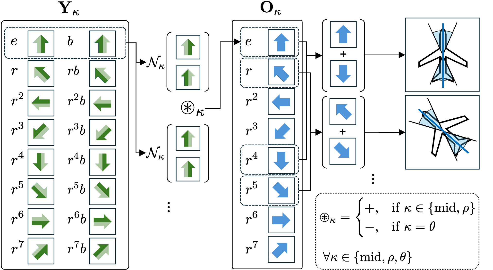

Orientational Anchors
Inspired by anchor boxes in detection, we treat each pixel as an anchor for potential symmetry axes and introduce orientational anchors to integrate the group dimension into the detection framework. This approach enables directionally specialized axis detection and improved handling of axes with overlapping midpoints but different orientations. We aggregate reflection counterpart pairs from DN-equivariant features and construct orientational anchors that specialize in detecting axes within specific orientation ranges.
